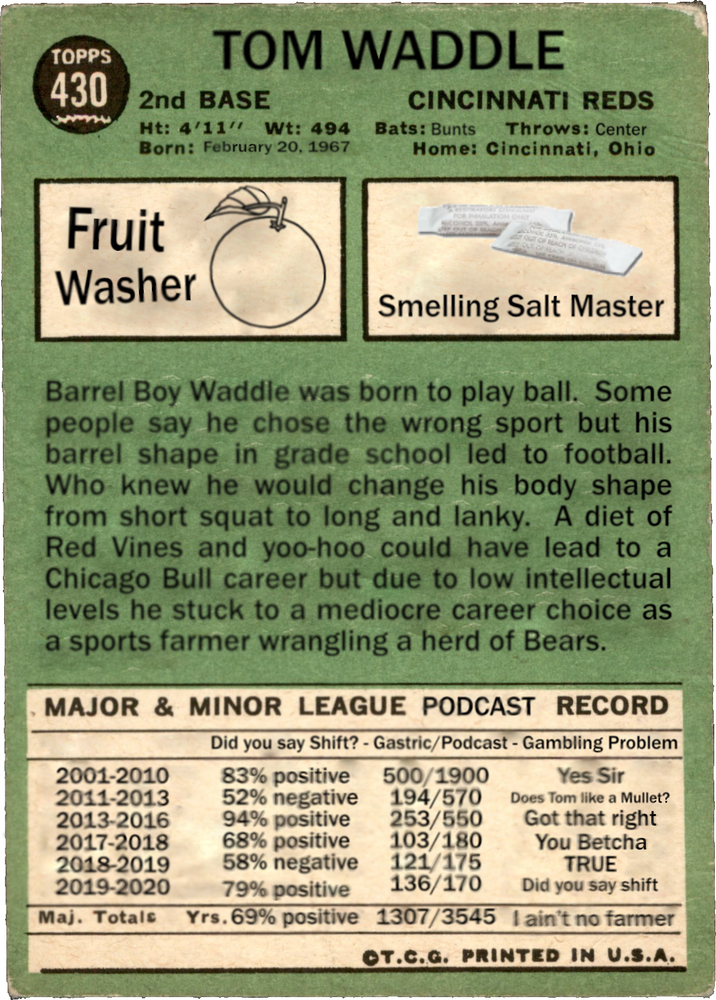
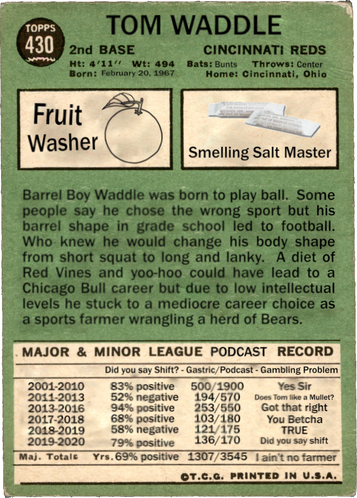
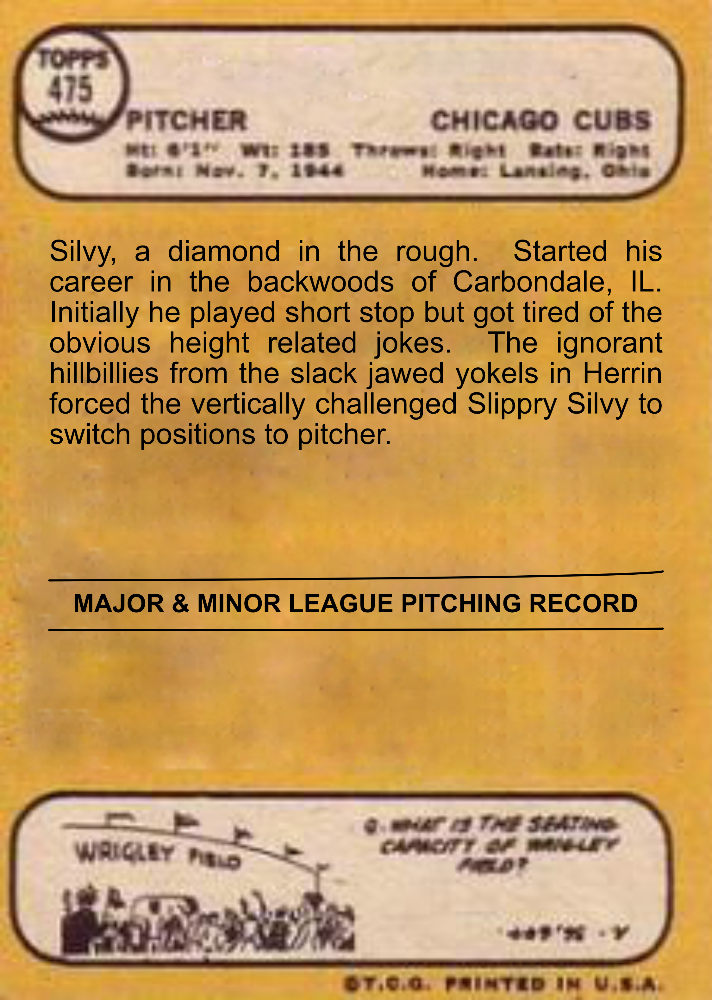
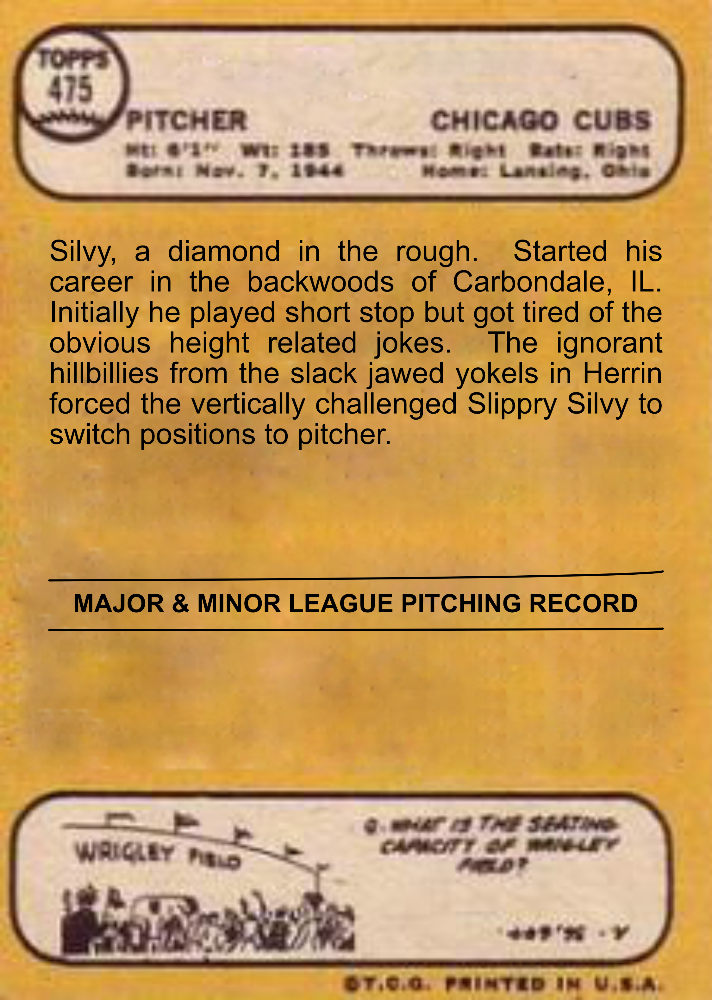

 


Waddle and Sylvy - The Untold Story
It has taken many years of research but we finally figured out the unlikely pairing of Sir Thomas Waddle and Slippery Silvey the Marcsman of Ye Ole Salukis. It all started in the Spring of 1995. They were both planning on taking shortstop from a disappointed young player named Derek Jeter. Well, that did not work out so they split up and went their separate ways. As they left the stadium in separate cars they both had an ache deep in their hearts that this would not be the end of their friendship. Although purely platonic they both felt as if their lives would not be complete until they shared a life together like the Olson twins were seen as a single soul on Full House. It is this editor's belief that the untimely death of Danny Tanner has brought out this story.
Well anyways, the two young studs ended up making their own paths. Waddle with the Reds and Silvey with the Cubs. They had illustrious and hall of fame careers but as all good love stories go, they found their way back together in Chicago. It was not smooth sailing. Waddle was a bit resentful that Silvy didn’t join him in Cincinnati. Silvy was floundering in self-doubt during his time with the Cubs. A type of self-doubt that only a well-educated fruit washer could help. It took some time for Waddle to come around and work with Silvy. I think Waddle recounts it best so I will use his not-so exact thoughts. Waddle might have said something like “While peeing myself in the shower I began to realize how important the Slippery Silvy is to me.” I am not sure I got that exact but I bet it was close. At that same moment, Silvy was bawling his eyes out in misery. He would tell everyone it was the Cubs but we know it was really his longing to do a talk show with Waddle.
Here we are, seventeen years, or so, later and they are possibly the most important talk show on the radio today.